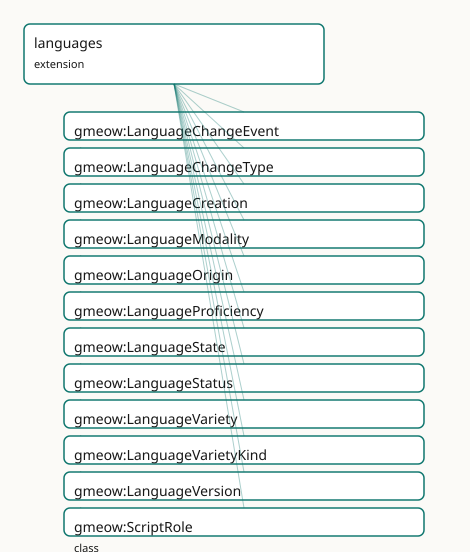

GMEOW Languages Module
- IRI: https://blackcatinformatics.ca/gmeow/slices/languages
- Tier: extension
Group: extensions
What This Slice Covers
This slice owns 171 terms and contributes 16 mapping or projection rows. Use it when its terms match the native fact you want to preserve; use the linkage tables to see how those facts leave GMEOW for consumer vocabularies.
Dependencies
gmeow:slices/expertisegmeow:slices/kernelgmeow:slices/languagegmeow:slices/observationsgmeow:slices/provenancegmeow:slices/temporal
Consumers
- Rich sociolinguistics (proficiency, scripts, varieties, diachrony) extending the core language slim slice.
Local Map

Terms
Classes
| Term | Label | Definition |
|---|---|---|
gmeow:LanguageChangeEvent |
Language Change Event | A historical linguistic change — sound shifts, semantic drift, borrowing, spelling reform, grammatical change, lexical innovation, standardization, language co... |
gmeow:LanguageChangeType |
Language Change Type | The kind of historical linguistic change — a value, never an Entity subclass. Open-ended: new analytical frameworks may introduce further change types without... |
gmeow:LanguageCreation |
Language Creation | The activity of creating or generating a language — a conlanger's design work or an AI model's generation run. Linked to its product by gmeow:wasGeneratedBy (t... |
gmeow:LanguageModality |
Language Modality | The sensory/transmission channel of a language (spoken, signed, written, whistled, tactile, machine, multimodal). A value carried by gmeow:languageModality. |
gmeow:LanguageOrigin |
Language Origin | How a language came to be (natural, constructed, AI-generated, formal, pidgin, creole, reconstructed, …). A value, not a Language subclass: origins are open-en... |
gmeow:LanguageProficiency |
Language Proficiency | A reified, leveled proficiency of an agent in a language, in a particular skill modality — the gufo:Relator binding {agent} × {language} × {skill modality} × {... |
gmeow:LanguageState |
Language State | A reified, standpoint-scoped claim about the status of a language, variety, or version during a specific interval — the analytic/historical slice of a language... |
gmeow:LanguageStatus |
Language Status | The vitality status of a language (living, historical, extinct, dormant, revived, emerging, proposed, constructed-active). A value carried by gmeow:languageSta... |
gmeow:LanguageVariety |
Language Variety | A speech variety that carries names, scripts, tags, status, provenance, and alignment metadata exactly as a gmeow:Language does, because it IS a language (a Su... |
gmeow:LanguageVarietyKind |
Language Variety Kind | The sociolinguistic classification of a language variety — a value, never an Entity subclass. Standpoint-scoped: 'dialect' according to one authority may be 'l... |
gmeow:LanguageVersion |
Language Version | A concrete, dated revision of a language that is itself a fully usable language (Ithkuil 1993 / 2011 / New Ithkuil; an AI language v1 / v2). Subclass of gmeow:... |
gmeow:ScriptRole |
Script Role | The role a writing system plays within a language's mixed orthography (primary, logographic content, syllabic grammar, loanword, transliteration, liturgical, h... |
gmeow:TextDirection |
Text Direction | The writing direction of a writing system (ltr, rtl, vertical, boustrophedon, non-linear, contextual). A value carried by gmeow:textDirection. |
gmeow:WritingSystemType |
Writing System Type | The structural kind of a writing system (alphabet, abjad, abugida, syllabary, logographic, featural, ideographic, pictographic, non-linear, mixed). A value car... |
gmeow:WritingSystemUsage |
Writing System Usage | A reified, role- and period-scoped use of a writing system by a language — the gufo:Relator binding {language} × {writing system} × {role} × {period}, mirrorin... |
Properties
| Term | Label | Definition |
|---|---|---|
gmeow:affectedLanguage |
affected language | The language(s) or variety(ies) affected by this change event. NON-FUNCTIONAL: language contact and merger events affect multiple languages. |
gmeow:changeType |
change type | The kind(s) of linguistic change occurring — sound shift, borrowing, standardization, extinction, etc. NON-FUNCTIONAL: a single event may instantiate multiple... |
gmeow:designGoal |
design goal | The stated design goal/purpose of an engineered or constructed language (Lojban's syntactic unambiguity, Ithkuil's cognitive precision, an IAL's ease of learni... |
gmeow:knowsLanguage |
knows language | Relates an agent to a language it knows. Non-functional. The leveled, per-skill detail is carried by the reified gmeow:LanguageProficiency. |
gmeow:languageModality |
language modality | The sensory/transmission modality/modalities of a language (gmeow:LanguageModality individuals). Non-functional — many languages are multimodal (spoken and wri... |
gmeow:languageOrigin |
language origin | The origin kind(s) of a language (gmeow:LanguageOrigin individuals). Non-functional — a contact language may be both creole and mixed. |
gmeow:languageStatus |
language status | The vitality status of a language (a gmeow:LanguageStatus value). Non-functional: source classifications coexist; period carried with gmeow:validFrom/validUnti... |
gmeow:levelScale |
level scale | The scale a proficiency-level individual belongs to (e.g. cefrB2 levelScale scaleCEFR). Functional. |
gmeow:nativeLanguage |
native language | Relates an agent to a native (mother-tongue / first) language — a specialization of gmeow:knowsLanguage. Non-functional: a person may have several native langu... |
gmeow:proficiencyAgent |
proficiency agent | The agent whose proficiency a language-proficiency expresses. Functional — constitutive of the proficiency. |
gmeow:proficiencyInterval |
proficiency interval | The interval over which a language-proficiency held (proficiency changes over a life). Lighter cases use gmeow:validFrom/validUntil on the statement. |
gmeow:proficiencyLanguage |
proficiency language | The language a language-proficiency concerns. Functional — constitutive. |
gmeow:proficiencyLevel |
proficiency level | The attained level of a language-proficiency (a gmeow:ProficiencyLevel value, e.g. cefrB2, levelNative). Functional. |
gmeow:proficiencyModality |
proficiency modality | The skill modality a language-proficiency rates (speaking, listening, reading, writing, signing, comprehension, overall) — a gmeow:ProficiencyModality value. F... |
gmeow:proficiencyScale |
proficiency scale | The framework/scale a proficiency level is measured on (CEFR, ILR, ACTFL, self-reported) — a gmeow:ProficiencyScale value. Functional. |
gmeow:scriptCode |
script code | The ISO 15924 script code of a writing system ("Latn", "Hani", "Hira", "Kana", "Arab", "Brai") when one exists, else a bespoke identifier for a conlang/AI scri... |
gmeow:scriptRole |
script role | The functional role a writing system plays for a language in a usage (a gmeow:ScriptRole value). Functional: one role per usage — a script playing two roles is... |
gmeow:scriptUsageInterval |
script usage interval | The interval over which a writing-system-usage held — e.g. Turkish-in-Arabic-script until 1928. A relator carries its period this way (matching names' NameUsag... |
gmeow:stateAuthority |
state authority | The agent or standpoint asserting this language state — a linguist, an institution, a historical reconstruction project. NON-FUNCTIONAL: competing authority cl... |
gmeow:stateInterval |
state interval | The time interval over which this language state is asserted to hold — e.g. Old English 450–1150 CE. A relator carries its period this way (matching VersionMem... |
gmeow:stateLanguage |
state language | The language, variety, or version whose state is being described. Functional per relator: one subject language per LanguageState. |
gmeow:stateStatusValue |
state status value | The vitality status(es) asserted for the language during this state. NON-FUNCTIONAL: different authorities may assign different statuses for the same interval,... |
gmeow:textDirection |
text direction | The writing direction(s) of a writing system (gmeow:TextDirection values). Non-functional — Japanese is both vertical-rtl and ltr. |
gmeow:usageLanguage |
usage language | The language that uses the writing system in a writing-system-usage. Functional — constitutive of the usage (a usage binds exactly one language). |
gmeow:usageWritingSystem |
usage writing system | The writing system used by the language in a writing-system-usage. Functional — constitutive of the usage. |
gmeow:usesWritingSystem |
uses writing system | Relates a language to a writing system it is written in — the direct relation. Non-functional and CO-EQUAL: Japanese uses Han, Hiragana, Katakana and Latin sim... |
gmeow:varietyKind |
variety kind | The sociolinguistic classification(s) of a language variety — dialect, sociolect, register, idiolect, slang, standard, etc. NON-FUNCTIONAL: a single variety ma... |
gmeow:varietyOf |
variety of | The parent language, lineage, or macrolanguage that a variety is considered a variety of. NON-FUNCTIONAL: standpoint-dependent — one standpoint may link Scots... |
gmeow:versionLabel |
version label | The version designation of an entity as a literal ("1993", "2011", "v2.1.0-beta", "3rd Edition"). Domain is gmeow:Entity so any versioned artifact — a language... |
gmeow:writingSystemType |
writing system type | The structural kind(s) of a writing system (gmeow:WritingSystemType values). Non-functional — a script may be classified plurally. |
Individuals
| Term | Label | Definition |
|---|---|---|
gmeow:assessedBeginner |
assessed beginner | The assessed beginner proficiency level — a milestone on a scale that describes how well an agent commands a language or skill. |
gmeow:assessedCompetent |
assessed competent | The assessed competent proficiency level — a milestone on a scale that describes how well an agent commands a language or skill. |
gmeow:assessedExpert |
assessed expert | The assessed expert proficiency level — a milestone on a scale that describes how well an agent commands a language or skill. |
gmeow:cefrA1 |
CEFR A1 | The a 1 proficiency level — a milestone on a scale that describes how well an agent commands a language or skill. |
gmeow:cefrA2 |
CEFR A2 | The a 2 proficiency level — a milestone on a scale that describes how well an agent commands a language or skill. |
gmeow:cefrB1 |
CEFR B1 | The b 1 proficiency level — a milestone on a scale that describes how well an agent commands a language or skill. |
gmeow:cefrB2 |
CEFR B2 | The b 2 proficiency level — a milestone on a scale that describes how well an agent commands a language or skill. |
gmeow:cefrC1 |
CEFR C1 | The c 1 proficiency level — a milestone on a scale that describes how well an agent commands a language or skill. |
gmeow:cefrC2 |
CEFR C2 | The c 2 proficiency level — a milestone on a scale that describes how well an agent commands a language or skill. |
gmeow:changeBorrowing |
borrowing | The borrowing language change type — a kind of diachronic process that alters a language's form, lexicon, or social standing. |
gmeow:changeExtinction |
extinction | The extinction language change type — a kind of diachronic process that alters a language's form, lexicon, or social standing. |
gmeow:changeGrammaticalChange |
grammatical change | The grammatical change language change type — a kind of diachronic process that alters a language's form, lexicon, or social standing. |
gmeow:changeLanguageContact |
language contact | The language contact language change type — a kind of diachronic process that alters a language's form, lexicon, or social standing. |
gmeow:changeLexicalInnovation |
lexical innovation | The lexical innovation language change type — a kind of diachronic process that alters a language's form, lexicon, or social standing. |
gmeow:changeMerger |
merger | The merger language change type — a kind of diachronic process that alters a language's form, lexicon, or social standing. |
gmeow:changeRevitalization |
revitalization | The revitalization language change type — a kind of diachronic process that alters a language's form, lexicon, or social standing. |
gmeow:changeRevival |
revival | The revival language change type — a kind of diachronic process that alters a language's form, lexicon, or social standing. |
gmeow:changeSemanticDrift |
semantic drift | The semantic drift language change type — a kind of diachronic process that alters a language's form, lexicon, or social standing. |
gmeow:changeSoundShift |
sound shift | The sound shift language change type — a kind of diachronic process that alters a language's form, lexicon, or social standing. |
gmeow:changeSpellingReform |
spelling reform | The spelling reform language change type — a kind of diachronic process that alters a language's form, lexicon, or social standing. |
gmeow:changeSplit |
split | The split language change type — a kind of diachronic process that alters a language's form, lexicon, or social standing. |
gmeow:changeStandardization |
standardization | The standardization language change type — a kind of diachronic process that alters a language's form, lexicon, or social standing. |
gmeow:directionBoustrophedon |
boustrophedon | The boustrophedon text direction — a convention for ordering glyphs when rendering a writing system. |
gmeow:directionContextual |
contextual / bidirectional | The contextual text direction — a convention for ordering glyphs when rendering a writing system. |
gmeow:directionLtr |
left-to-right | The ltr text direction — a convention for ordering glyphs when rendering a writing system. |
gmeow:directionNonLinear |
non-linear | The non linear text direction — a convention for ordering glyphs when rendering a writing system. |
gmeow:directionRtl |
right-to-left | The rtl text direction — a convention for ordering glyphs when rendering a writing system. |
gmeow:directionVerticalLtr |
vertical, columns left-to-right | The vertical ltr text direction — a convention for ordering glyphs when rendering a writing system. |
gmeow:directionVerticalRtl |
vertical, columns right-to-left | The vertical rtl text direction — a convention for ordering glyphs when rendering a writing system. |
gmeow:dreyfusAdvancedBeginner |
Dreyfus advanced beginner | The advanced beginner proficiency level — a milestone on a scale that describes how well an agent commands a language or skill. |
gmeow:dreyfusCompetent |
Dreyfus competent | The competent proficiency level — a milestone on a scale that describes how well an agent commands a language or skill. |
gmeow:dreyfusExpert |
Dreyfus expert | The expert proficiency level — a milestone on a scale that describes how well an agent commands a language or skill. |
gmeow:dreyfusNovice |
Dreyfus novice | The novice proficiency level — a milestone on a scale that describes how well an agent commands a language or skill. |
gmeow:dreyfusProficient |
Dreyfus proficient | The proficient proficiency level — a milestone on a scale that describes how well an agent commands a language or skill. |
gmeow:kindCreole |
creole | The creole language variety kind — a sociolinguistic category that describes the relationship of a variety to its speech community. |
gmeow:kindDialect |
dialect | The dialect language variety kind — a sociolinguistic category that describes the relationship of a variety to its speech community. |
gmeow:kindIdiolect |
idiolect | The idiolect language variety kind — a sociolinguistic category that describes the relationship of a variety to its speech community. |
gmeow:kindJargon |
jargon | The jargon language variety kind — a sociolinguistic category that describes the relationship of a variety to its speech community. |
gmeow:kindKoine |
koine | The koine language variety kind — a sociolinguistic category that describes the relationship of a variety to its speech community. |
gmeow:kindLanguage |
language (standpointed classification) | The language language variety kind — a sociolinguistic category that describes the relationship of a variety to its speech community. |
gmeow:kindLinguaFranca |
lingua franca | The lingua franca language variety kind — a sociolinguistic category that describes the relationship of a variety to its speech community. |
gmeow:kindLocalizedVariant |
localized variant | The localized variant language variety kind — a sociolinguistic category that describes the relationship of a variety to its speech community. |
gmeow:kindPidgin |
pidgin | The pidgin language variety kind — a sociolinguistic category that describes the relationship of a variety to its speech community. |
gmeow:kindRegister |
register | The register language variety kind — a sociolinguistic category that describes the relationship of a variety to its speech community. |
gmeow:kindSlang |
slang | The slang language variety kind — a sociolinguistic category that describes the relationship of a variety to its speech community. |
gmeow:kindSociolect |
sociolect | The sociolect language variety kind — a sociolinguistic category that describes the relationship of a variety to its speech community. |
gmeow:kindStandard |
standard | The standard language variety kind — a sociolinguistic category that describes the relationship of a variety to its speech community. |
gmeow:levelHeritage |
heritage | The heritage proficiency level — a milestone on a scale that describes how well an agent commands a language or skill. |
gmeow:levelNative |
native | The native proficiency level — a milestone on a scale that describes how well an agent commands a language or skill. |
gmeow:modalityMachine |
machine / programmatic | The machine language modality — a channel or medium through which a language is produced or perceived. |
gmeow:modalityMultimodal |
multimodal | The multimodal language modality — a channel or medium through which a language is produced or perceived. |
gmeow:modalitySigned |
signed | The signed language modality — a channel or medium through which a language is produced or perceived. |
gmeow:modalitySpoken |
spoken | The spoken language modality — a channel or medium through which a language is produced or perceived. |
gmeow:modalityTactile |
tactile (e.g. Braille, Protactile) | The tactile language modality — a channel or medium through which a language is produced or perceived. |
gmeow:modalityWhistled |
whistled | The whistled language modality — a channel or medium through which a language is produced or perceived. |
gmeow:modalityWritten |
written | The written language modality — a channel or medium through which a language is produced or perceived. |
gmeow:nihAdvanced |
NIH advanced | The advanced proficiency level — a milestone on a scale that describes how well an agent commands a language or skill. |
gmeow:nihBeginner |
NIH beginner | The beginner proficiency level — a milestone on a scale that describes how well an agent commands a language or skill. |
gmeow:nihExpert |
NIH expert | The expert proficiency level — a milestone on a scale that describes how well an agent commands a language or skill. |
gmeow:nihIntermediate |
NIH intermediate | The intermediate proficiency level — a milestone on a scale that describes how well an agent commands a language or skill. |
gmeow:originAiGenerated |
AI / machine-generated | The ai generated language origin — a provenance category that explains how a language or variety arose. |
gmeow:originConstructedArtistic |
constructed — artistic (e.g. Quenya, Klingon) | The constructed artistic language origin — a provenance category that explains how a language or variety arose. |
gmeow:originConstructedAuxiliary |
constructed — auxiliary (IAL, e.g. Esperanto) | The constructed auxiliary language origin — a provenance category that explains how a language or variety arose. |
gmeow:originConstructedEngineered |
constructed — engineered (e.g. Lojban, Ithkuil) | The constructed engineered language origin — a provenance category that explains how a language or variety arose. |
gmeow:originConstructedRitual |
constructed — ritual / liturgical | The constructed ritual language origin — a provenance category that explains how a language or variety arose. |
gmeow:originCreole |
creole | The creole language origin — a provenance category that explains how a language or variety arose. |
gmeow:originFormal |
formal (logic / schema) | The formal language origin — a provenance category that explains how a language or variety arose. |
gmeow:originMarkup |
markup | The markup language origin — a provenance category that explains how a language or variety arose. |
gmeow:originMixed |
mixed / contact language | The mixed language origin — a provenance category that explains how a language or variety arose. |
gmeow:originNatural |
natural | The natural language origin — a provenance category that explains how a language or variety arose. |
gmeow:originPidgin |
pidgin | The pidgin language origin — a provenance category that explains how a language or variety arose. |
gmeow:originProgramming |
programming | The programming language origin — a provenance category that explains how a language or variety arose. |
gmeow:originQuery |
query | The query language origin — a provenance category that explains how a language or variety arose. |
gmeow:originReconstructed |
reconstructed (proto-language) | The reconstructed language origin — a provenance category that explains how a language or variety arose. |
gmeow:profModalityComprehension |
comprehension | The comprehension proficiency modality — a specific skill channel (receptive, productive, signing, etc.) on which proficiency is assessed. |
gmeow:profModalityListening |
listening | The listening proficiency modality — a specific skill channel (receptive, productive, signing, etc.) on which proficiency is assessed. |
gmeow:profModalityOverall |
overall | The overall proficiency modality — a specific skill channel (receptive, productive, signing, etc.) on which proficiency is assessed. |
gmeow:profModalityReading |
reading | The reading proficiency modality — a specific skill channel (receptive, productive, signing, etc.) on which proficiency is assessed. |
gmeow:profModalitySigning |
signing | The signing proficiency modality — a specific skill channel (receptive, productive, signing, etc.) on which proficiency is assessed. |
gmeow:profModalitySpeaking |
speaking | The speaking proficiency modality — a specific skill channel (receptive, productive, signing, etc.) on which proficiency is assessed. |
gmeow:profModalityWriting |
writing | The writing proficiency modality — a specific skill channel (receptive, productive, signing, etc.) on which proficiency is assessed. |
gmeow:scaleACTFL |
ACTFL | The actfl proficiency scale — a named framework that defines ordered levels of language or skill competence. |
gmeow:scaleAssessed |
assessed | The assessed proficiency scale — a named framework that defines ordered levels of language or skill competence. |
gmeow:scaleCEFR |
CEFR | The cefr proficiency scale — a named framework that defines ordered levels of language or skill competence. |
gmeow:scaleDreyfus |
Dreyfus | The dreyfus proficiency scale — a named framework that defines ordered levels of language or skill competence. |
gmeow:scaleILR |
ILR | The ilr proficiency scale — a named framework that defines ordered levels of language or skill competence. |
gmeow:scaleNIH |
NIH | The nih proficiency scale — a named framework that defines ordered levels of language or skill competence. |
gmeow:scaleSelfReported |
self-reported | The self reported proficiency scale — a named framework that defines ordered levels of language or skill competence. |
gmeow:schemeBGNPCGN |
BGN/PCGN romanization | The bgn/pcgn transliteration scheme — a rule set for converting text from one writing system into another while preserving phonemic or orthographic structure. |
gmeow:schemeHepburn |
Hepburn (Japanese → Latin) | The hepburn transliteration scheme — a rule set for converting text from one writing system into another while preserving phonemic or orthographic structure. |
gmeow:schemeIAST |
IAST (Sanskrit/Indic → Latin) | The iast transliteration scheme — a rule set for converting text from one writing system into another while preserving phonemic or orthographic structure. |
gmeow:schemeIPA |
IPA phonetic transcription | The ipa transliteration scheme — a rule set for converting text from one writing system into another while preserving phonemic or orthographic structure. |
gmeow:schemeISO15919 |
ISO 15919 (Indic → Latin) | The iso 15919 transliteration scheme — a rule set for converting text from one writing system into another while preserving phonemic or orthographic structure. |
gmeow:schemeISO233 |
ISO 233 (Arabic → Latin) | The iso 233 transliteration scheme — a rule set for converting text from one writing system into another while preserving phonemic or orthographic structure. |
gmeow:schemeKunreiShiki |
Kunrei-shiki (Japanese → Latin) | The kunrei shiki transliteration scheme — a rule set for converting text from one writing system into another while preserving phonemic or orthographic structu... |
gmeow:schemeMcCuneReischauer |
McCune-Reischauer (Korean → Latin) | The mc cune reischauer transliteration scheme — a rule set for converting text from one writing system into another while preserving phonemic or orthographic s... |
gmeow:schemeNihonShiki |
Nihon-shiki (Japanese → Latin) | The nihon shiki transliteration scheme — a rule set for converting text from one writing system into another while preserving phonemic or orthographic structur... |
gmeow:schemePinyin |
Hanyu Pinyin (Mandarin → Latin) | The pinyin transliteration scheme — a rule set for converting text from one writing system into another while preserving phonemic or orthographic structure. |
gmeow:schemeRevisedRomanization |
Revised Romanization (Korean → Latin) | The revised romanization transliteration scheme — a rule set for converting text from one writing system into another while preserving phonemic or orthographic... |
gmeow:schemeWadeGiles |
Wade-Giles (Mandarin → Latin) | The wade giles transliteration scheme — a rule set for converting text from one writing system into another while preserving phonemic or orthographic structure. |
gmeow:scriptRoleDecorative |
decorative | The decorative script role — a function a writing system performs for a particular lexical item or passage. |
gmeow:scriptRoleHistorical |
historical / superseded | The historical script role — a function a writing system performs for a particular lexical item or passage. |
gmeow:scriptRoleLiturgical |
liturgical | The liturgical script role — a function a writing system performs for a particular lexical item or passage. |
gmeow:scriptRoleLoanword |
loanword / foreign term | The loanword script role — a function a writing system performs for a particular lexical item or passage. |
gmeow:scriptRoleLogographicContent |
logographic content | The logographic content script role — a function a writing system performs for a particular lexical item or passage. |
gmeow:scriptRolePrimary |
primary | The primary script role — a function a writing system performs for a particular lexical item or passage. |
gmeow:scriptRoleSyllabicGrammar |
syllabic grammar / inflection | The syllabic grammar script role — a function a writing system performs for a particular lexical item or passage. |
gmeow:scriptRoleTransliteration |
transliteration / romanization | The transliteration script role — a function a writing system performs for a particular lexical item or passage. |
gmeow:statusConstructedActive |
constructed — actively used | The constructed active language status — a vitality or registration stage of a language or constructed language project. |
gmeow:statusDormant |
dormant | The dormant language status — a vitality or registration stage of a language or constructed language project. |
gmeow:statusEmerging |
emerging | The emerging language status — a vitality or registration stage of a language or constructed language project. |
gmeow:statusExtinct |
extinct | The extinct language status — a vitality or registration stage of a language or constructed language project. |
gmeow:statusHistorical |
historical | The historical language status — a vitality or registration stage of a language or constructed language project. |
gmeow:statusLiving |
living | The living language status — a vitality or registration stage of a language or constructed language project. |
gmeow:statusProposed |
proposed | The proposed language status — a vitality or registration stage of a language or constructed language project. |
gmeow:statusRevived |
revived | The revived language status — a vitality or registration stage of a language or constructed language project. |
gmeow:wsTypeAbjad |
abjad | The abjad writing system type — a classification of a script by how its symbols encode language units. |
gmeow:wsTypeAbugida |
abugida | The abugida writing system type — a classification of a script by how its symbols encode language units. |
gmeow:wsTypeAlphabet |
alphabet | The alphabet writing system type — a classification of a script by how its symbols encode language units. |
gmeow:wsTypeFeatural |
featural | The featural writing system type — a classification of a script by how its symbols encode language units. |
gmeow:wsTypeIdeographic |
ideographic | The ideographic writing system type — a classification of a script by how its symbols encode language units. |
gmeow:wsTypeLogographic |
logographic | The logographic writing system type — a classification of a script by how its symbols encode language units. |
gmeow:wsTypeMixed |
mixed | The mixed writing system type — a classification of a script by how its symbols encode language units. |
gmeow:wsTypeNonLinear |
non-linear (e.g. Ithkuil) | The non linear writing system type — a classification of a script by how its symbols encode language units. |
gmeow:wsTypePictographic |
pictographic | The pictographic writing system type — a classification of a script by how its symbols encode language units. |
gmeow:wsTypeSyllabary |
syllabary | The syllabary writing system type — a classification of a script by how its symbols encode language units. |
Linkages
- Rows: 16
- Projection profiles:
schema-org - External vocabularies:
doap,schema,wd,wdt
| Source | Kind | Profile | Predicate/Relation | Target | Evidence |
|---|---|---|---|---|---|
gmeow:knowsLanguage |
equivalence | - |
skos:closeMatch | schema:knowsLanguage | gmeow-languages.sssom.tsv; gmeow:eqLanguages008; confidence 0.9 |
gmeow:knowsLanguage |
equivalence | - |
skos:closeMatch | wdt:P1412 | gmeow-languages.sssom.tsv; gmeow:eqLanguages009; confidence 0.7 |
gmeow:modalitySigned |
equivalence | - |
skos:closeMatch | wd:Q34228 | gmeow-languages.sssom.tsv; gmeow:eqLanguages014; confidence 0.6 |
gmeow:nativeLanguage |
equivalence | - |
skos:closeMatch | wdt:P103 | gmeow-languages.sssom.tsv; gmeow:eqLanguages010; confidence 0.8 |
gmeow:originConstructedEngineered |
equivalence | - |
skos:closeMatch | wd:Q33215 | gmeow-languages.sssom.tsv; gmeow:eqLanguages013; confidence 0.6 |
gmeow:originNatural |
equivalence | - |
skos:closeMatch | wd:Q33742 | gmeow-languages.sssom.tsv; gmeow:eqLanguages012; confidence 0.7 |
gmeow:usesWritingSystem |
equivalence | - |
skos:closeMatch | wdt:P282 | gmeow-languages.sssom.tsv; gmeow:eqLanguages007; confidence 0.8 |
gmeow:versionLabel |
equivalence | - |
skos:closeMatch | doap:revision | gmeow-versions.sssom.tsv; gmeow:eqVersions002; confidence 0.85 |
gmeow:versionLabel |
equivalence | - |
skos:closeMatch | schema:version | gmeow-versions.sssom.tsv; gmeow:eqVersions001; confidence 0.85 |
gmeow:LanguageProficiency |
projection | schema-org |
projects to / <= | schema:knowsLanguage | gmeow:mapSchemaKnowsLanguageProficiency; confidence 0.8; lossy: CEFR/ILR/ACTFL level and skill modality dropped; transform gmeow:fnProficiencyToKnownLanguage |
gmeow:knowsLanguage |
projection | schema-org |
projects to / <= | schema:knowsLanguage | gmeow:mapSchemaKnowsLanguageFlat |
gmeow:knowsLanguage |
projection | schema-org |
projects to / <= | schema:knowsLanguage | gmeow:mapSchemaKnowsLanguageProficiency; confidence 0.8; lossy: CEFR/ILR/ACTFL level and skill modality dropped; transform gmeow:fnProficiencyToKnownLanguage |
gmeow:proficiencyAgent |
projection | schema-org |
projects to / <= | schema:knowsLanguage | gmeow:mapSchemaKnowsLanguageProficiency; confidence 0.8; lossy: CEFR/ILR/ACTFL level and skill modality dropped; transform gmeow:fnProficiencyToKnownLanguage |
gmeow:proficiencyLanguage |
projection | schema-org |
projects to / <= | schema:knowsLanguage | gmeow:mapSchemaKnowsLanguageProficiency; confidence 0.8; lossy: CEFR/ILR/ACTFL level and skill modality dropped; transform gmeow:fnProficiencyToKnownLanguage |
gmeow:scriptCode |
projection | schema-org |
projects to / <= | schema:alternateName | gmeow:mapSchemaBcp47; confidence 0.8; lossy: Glottocodes excluded; only 2-3 letter primary subtags; transform gmeow:fnComposeBcp47 |
gmeow:usesWritingSystem |
projection | schema-org |
projects to / <= | schema:alternateName | gmeow:mapSchemaBcp47; confidence 0.8; lossy: Glottocodes excluded; only 2-3 letter primary subtags; transform gmeow:fnComposeBcp47 |
Guide
Languages — modelling & interoperability guide
Most vocabularies treat a language as an opaque tag: inLanguage "ja". That single
assumption — a language is its ISO/BCP-47 code — structurally excludes the
languages that matter most to a forward-looking model:
| Real case | What an ISO code can't do |
|---|---|
| Ithkuil (engineered conlang) | has no ISO 639 code, and several incompatible versions |
| an AI-minted interlingua | has no code at all, and a software creator |
| an under-coded sign / minority language | the registry lags reality |
| Japanese orthography | co-mingles four scripts in one sentence |
| a bespoke / non-linear conlang script | isn't in ISO 15924 |
GMEOW inverts the assumption, exactly as the names block did for personal names.
Governing tenet: registry-independent identity
A gmeow:Language has a self-minted IRI. Registry codes — BCP-47, ISO 639,
Glottolog, Wikidata — are optional alignments (gmeow:languageCode,
gmeow:authorityLink, skos:exactMatch), never the primary key. A code-less
conlang or AI-language is therefore a fully first-class, co-equal language.
tests/test_languages.py enforces that nothing requires a code.
To isolate the GMEOW graph from registry changes and support code-less conlangs, all internal literals must use private-use BCP-47 tags (e.g. @en) for any GMEOW-namespaced property. The language entity's gmeow:languageTag functional property links the entity to its internal tag.
@prefix gmeow: <https://blackcatinformatics.ca/gmeow/> .
@prefix ex: <https://example.org/lang/> .
# First-class language individuals define their private-use tags:
ex:english a gmeow:Language ;
gmeow:languageTag "en" ;
gmeow:languageCode "en" .
ex:ithkuil a gmeow:Language ; # NO languageCode — and that's fine
gmeow:languageTag "und" ;
gmeow:languageOrigin gmeow:originConstructedEngineered ;
gmeow:designGoal "Maximal cognitive precision with minimal ambiguity." ;
gmeow:wasAttributedTo ex:quijada ; # a human creator…
gmeow:hasAppellation [
gmeow:fullName "Ithkuil"@en ;
gmeow:nameLanguage ex:english ;
gmeow:namePurpose gmeow:namePurposeGlossonym
] .
ex:aiLang a gmeow:Language ;
gmeow:languageTag "und" ;
gmeow:languageOrigin gmeow:originAiGenerated ;
gmeow:wasAttributedTo ex:modelAgent . # …or a gmeow:SoftwareAgent
★ The registry tag isn't discarded — it's reconstructed on demand by the
projection layer (see below), so schema.org consumers still get ja-Hani etc.
Scope: one umbrella, many kinds
gmeow:Language covers natural, constructed (auxiliary / engineered / artistic /
ritual), AI-generated, historical / reconstructed, sign / whistled / tactile, and
formal languages. The single structural split is gmeow:FormalLanguage →
gmeow:ProgrammingLanguage (grammar-defined, machine modality, no native
speakers); a software project links to one via gmeow:writtenInLanguage.
Everything else is
distinguished by value vocabularies: languageOrigin, languageModality
(spoken / signed / written / whistled / tactile / machine / multimodal),
languageStatus.
Writing systems are first-class — and co-mingled
A language uses many co-equal scripts at once. Japanese interleaves four, each
in a distinct role — so "a language has one script" is as wrong as "a person has
one name", and the fix is the same reified-usage relator (WritingSystemUsage,
mirroring names' NameUsage):
| Script | scriptCode |
Role (scriptRole) |
Example |
|---|---|---|---|
| Han (kanji) | Hani |
scriptRoleLogographicContent |
山田 (content words) |
| Hiragana | Hira |
scriptRoleSyllabicGrammar |
は、を (grammar/okurigana) |
| Katakana | Kana |
scriptRoleLoanword |
コンピュータ (loanwords) |
| Rōmaji | Latn |
scriptRoleTransliteration |
"Yamada" (transliteration) |
ex:japanese gmeow:usesWritingSystem ex:wsHan , ex:wsHiragana , ex:wsKatakana , ex:wsRomaji .
ex:wsuJaHan a gmeow:WritingSystemUsage ;
gmeow:usageLanguage ex:japanese ; gmeow:usageWritingSystem ex:wsHan ;
gmeow:scriptRole gmeow:scriptRoleLogographicContent .
# …three more usages, one per script + role.
The usage also carries a period (gmeow:scriptUsageInterval /
validFrom/validUntil), so a script change over time is just a closed usage —
Turkish in Arabic script until 1928, then Latin. Bespoke and non-linear scripts
(Ithkuil) are first-class: a WritingSystem may have no scriptCode and
writingSystemType gmeow:wsTypeNonLinear.
Versions are a first-class lineage
A language evolves; AI languages version fast. Each version is itself a usable
gmeow:Language (a gmeow:LanguageVersion), linked up to its lineage by
gmeow:versionOf and ordered by gmeow:supersedes / gmeow:wasDerivedFrom —
older versions stay first-class.
ex:ithkuil2011 a gmeow:LanguageVersion ;
gmeow:versionOf ex:ithkuil ; gmeow:versionLabel "2011" ;
gmeow:supersedes ex:ithkuil1993 ; gmeow:wasDerivedFrom ex:ithkuil1993 .
Proficiency — reified, per-skill, leveled
A person knows a language to a degree, and differently per skill. GMEOW reifies
this (gmeow:LanguageProficiency, again the NameUsage idiom) — mint one per
(agent, language, modality), so "native overall" and "B2 writing" coexist:
Scale (proficiencyScale) |
Levels (proficiencyLevel) |
|---|---|
| CEFR | cefrA1…cefrC2 |
| ILR / ACTFL | added as further individuals |
| (scale-free) | levelNative, levelHeritage |
ex:profDeWriting a gmeow:LanguageProficiency ;
gmeow:proficiencyAgent ex:learner ; gmeow:proficiencyLanguage ex:german ;
gmeow:proficiencyModality gmeow:profModalityWriting ;
gmeow:proficiencyLevel gmeow:cefrB2 ; gmeow:proficiencyScale gmeow:scaleCEFR .
The base gmeow:knowsLanguage (≈ schema:knowsLanguage) and gmeow:nativeLanguage
relations state that an agent knows a language; gmeow:LanguageProficiency adds
the level and the skill.
Transformations are functions (FnO)
Transliteration, transcription and translation are functions — script→script
or language→language — so GMEOW catalogues them declaratively as
fno:Functions (projections/transforms.fno.ttl): Hepburn, Kunrei, Pinyin,
Wade-Giles, Revised Romanization, ISO 233 / 15919, IPA transcription, and a generic
translate. This closes a loop in the names block: gmeow:romanization now names
the system that produced it via gmeow:transliterationScheme, and each scheme
links to its FnO function.
ex:yamadaName gmeow:romanization "Yamada Tarō"@und ;
gmeow:transliterationScheme gmeow:schemeHepburn . # records HOW, not just WHAT
Language varieties — contested classifications without a winner
Dialect, sociolect, register, idiolect, localized variant, generational slang, standard, creole, pidgin, koine — these are all modeled as gmeow:LanguageVariety, a gufo:SubKind of gmeow:Language that inherits every language property (names, scripts, tags, status, provenance). The classification itself is a standpointed claim, not an OWL subclass decision.
The language-vs-dialect distinction is not an OWL class hierarchy decision. A single
LanguageVarietyentity can carry multiplevarietyKindassertions from different standpoints, and none is privileged (Principle 9).
ex:scots a gmeow:LanguageVariety ;
gmeow:languageTag "sco" ;
gmeow:varietyKind gmeow:kindLanguage , gmeow:kindDialect ;
gmeow:varietyOf ex:english .
# Standpoint reifiers — both coexist, neither wins.
ex:ax-scots-language a owl:Axiom ;
owl:annotatedSource ex:scots ; owl:annotatedProperty gmeow:varietyKind ;
owl:annotatedTarget gmeow:kindLanguage ;
gmeow:accordingTo ex:standpoint-snl ; gmeow:confidence 0.85 .
ex:ax-scots-dialect a owl:Axiom ;
owl:annotatedSource ex:scots ; owl:annotatedProperty gmeow:varietyKind ;
owl:annotatedTarget gmeow:kindDialect ;
gmeow:accordingTo ex:standpoint-academic ; gmeow:confidence 0.90 .
Querying all varietyKind assertions with their standpoints:
SELECT ?variety ?kind ?standpoint ?confidence WHERE {
?variety gmeow:varietyKind ?kind .
OPTIONAL {
?ax a owl:Axiom ;
owl:annotatedSource ?variety ;
owl:annotatedProperty gmeow:varietyKind ;
owl:annotatedTarget ?kind ;
gmeow:accordingTo ?standpoint ;
gmeow:confidence ?confidence .
}
}
varietyKind and varietyOf are both non-functional, so a single variety can hold multiple classifications and multiple parentage claims simultaneously. A superseded classification is suppressed with gmeow:displayable false (Principle 10), never erased.
LanguageVersion vs LanguageState — distinct purposes
LanguageVersion |
LanguageState |
|
|---|---|---|
| What | A named/released artifact | An analytic/historical slice |
| Examples | Ithkuil 2011, Python 3.12, an AI interlingua v2 | Old English 450–1150, Middle English 1150–1500 |
| Standpoint | Usually authoritative (the creator's release) | Often reconstructed and standpointed |
| Pattern | SubKind of Language | Observation + Relator (like VersionMembership) |
A version can have states, and a state can describe a version, but neither is defined as the other:
ex:ithkuil2011 a gmeow:LanguageVersion ;
gmeow:versionOf ex:ithkuil ; gmeow:versionLabel "2011" .
ex:ithkuil2011State a gmeow:LanguageState ;
gmeow:stateLanguage ex:ithkuil2011 ;
gmeow:stateStatusValue gmeow:statusConstructedActive ;
gmeow:stateAuthority ex:standpoint-academic ;
gmeow:stateInterval ex:modernEnglishInterval .
LanguageState follows the VersionMembership relator pattern: it binds {language} × {status} × {authority} × {interval}, inherits confidence / displayable / temporal scope from Observation, and bridges to the universal claim stack via stateLanguage ⊑ observedFeature and stateAuthority ⊑ vantage.
LanguageChangeEvent — diachronic arcs
Historical linguistic changes are first-class events: sound shifts, borrowing, standardization, extinction, revival, and more.
ex:greatVowelShift a gmeow:LanguageChangeEvent ;
gmeow:changeType gmeow:changeSoundShift ;
gmeow:affectedLanguage ex:english ;
gmeow:eventInterval ex:greatVowelShiftInterval .
Because LanguageState is an Observation, the existing bitemporal query (slices/core/temporal/queries/tql/bitemporal.rq) works out of the box: ask "what was the status of English as of 1200 CE?" and receive the Middle English state with its standpoint and confidence.
Interoperability — the four-layer stack
| Layer | Carries | Artifact |
|---|---|---|
| SSSOM | 1:1 term links (Language ≈ schema:Language / wd:Q34770; knowsLanguage ≈ schema:knowsLanguage) |
mappings/gmeow-languages.sssom.tsv |
| EDOAL | complex correspondences (relator→flat, code composition) | projections/schema-org.edoal.ttl |
| FnO | the transform functions | projections/functions.fno.ttl (+ transforms.fno.ttl) |
| CONSTRUCT | executor → pure schema.org | queries/projections/schema-org.rq |
The schema.org projection (run gmeow project) emits schema:Language /
schema:ComputerLanguage, both endonym and exonym as co-equal schema:names,
the flattened schema:knowsLanguage, and — via fnComposeBcp47 — the BCP-47 tag
as schema:alternateName (de+Latn → de-Latn; Japanese yields ja-Hani,
ja-Hira, ja-Kana, ja-Latn). Lossy drops: WritingSystemUsage, origin /
modality / status, version lineage, LanguageCreation, and the proficiency level.
Language instances coreference Lexvo (http://lexvo.org/id/iso639-3/…),
Glottolog and Wikidata in data via skos:exactMatch + gmeow:authorityLink.
What's deliberately non-standard (and why)
| GMEOW choice | The "standard" alternative | Why we reject it |
|---|---|---|
| Self-minted IRI; codes optional | a language is its ISO/BCP-47 code | Excludes code-less conlangs, AI-languages, under-coded sign/minority languages |
First-class WritingSystem + co-mingling relator |
one script subtag |
Can't represent Japanese's four roles, script change over time, or bespoke/non-linear scripts |
Reified per-skill LanguageProficiency |
proficiency stuffed in a label | Loses the scale, the skill, and the time |
| Version lineage of first-class languages | a version string |
An Ithkuil version is itself a usable language with its own scripts/names |
| Transliteration/translation as FnO functions | a bare romanization literal | A romanization should record how it was derived (Hepburn vs Kunrei) |
AI/software creator (SoftwareAgent) |
only human authorship | Languages an AI invents are first-class, forward-looking |